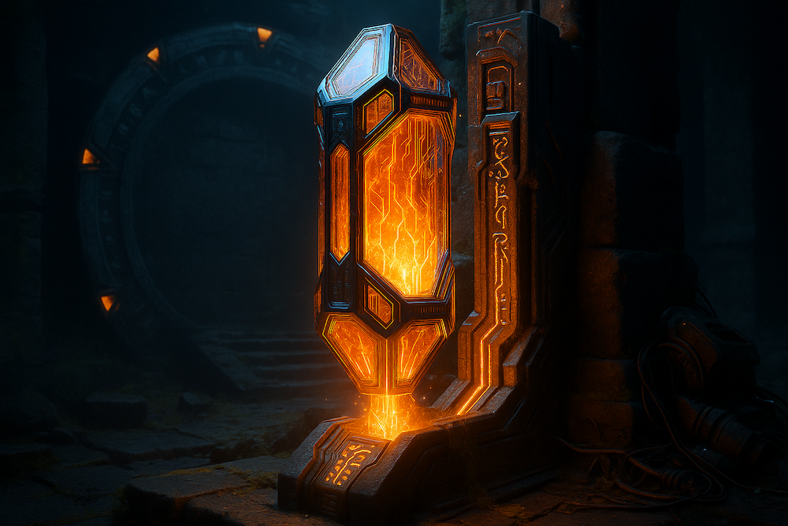
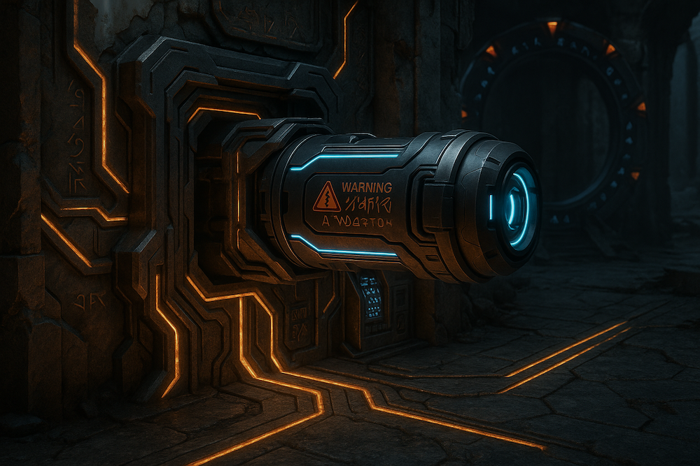

Classified data detected. This archive contains spoilers from the Stargate universe. Non-cleared personnel should disengage immediately.
An Introduction to Stargate Universe
When the Stargate movie first released in 1994, nobody could imagine where this would lead. After this movie, 3 series and 2 movies were released. So, the question is what is Stargate? Stargate takes its power from the world's mythologies.
It all starts with an object discovered in Egypt years ago. It is a round object and there are symbols on it.But nobody couldn't figure out what is it. Until, Dr. Daniel Jackson solved its mystery. It is a gate opening to other worlds, across the galaxy.
Everything started with this. That round object is the key to explore the galaxy. But evil was lying there. What would it be? Should we run to our beds and never speak of it again or should we face with the biggest discovery in the history of Mankind.
This story was started with a team soldiers going through this gate. Stargate is a device when somebody or something enters it, the gate reduce matter into atoms and send it to the other side which there is also another gate, then in here the gate reconsruct information and voila! We are on a new planet. Amazing technology!
History of the Stargate Universe
The first Stargate movie came out on October 28, 1994 and everything started right there. This movie led to 3 series and 2 movies but these last 2 movies are not real cinema films but a few series episodes made movies. Still, they are great. The first movie, which I will call The Stargate from now on, starts with a discovery at Egypt. A round object with different symbols on it. It moved to a secure US military base located at Cheyenne Mountain. After much research, Dr. Daniel Jackson solved the mystery behind it. We will take a closer look how this device works and what it does. After the movie was released, 3 tv shows were aired which are Stargate SG1, Stargate Atlantis and Stargate Universe. Also as I mentioned, there are 2 more movies which are Stargate The Ark Of Truth and Stargate Continuum. Besides those, there is one animated series called Stargate Infinity and a short series Stargate Origins.
Stargate SG1 introduces us a new species called Goa'uld. A parasitic species living inside humans and taking control of them. This is a true nighmare for humans. When this creature enters the body, it resides in the throat and suppresses the host’s personality. The host sees, hears, and experiences everything but has no control. This species are calls themselves gods. They created a servant species from humans called Jaffa. These Jaffa take Goa'uld symbiots and carry them for long time until they become adults. Jaffa serve and worship Goa'uld. Some Jaffa believe Goa'uld are not gods but they are afraid of speaking this because of punishment. But a Jaffa named Teal'c helps SG1 team to escape from Apophis and The story of Stargate SG1 begins. Stargate SG1 spans 10 seasons which is an amazing work. In these 10 seasons, The Earth started as a small power and grew into a galactic player. There are many different species we encountered but the most famous ones are Goa'uld, Asgard, Replicators, Ori and of course The Ancients, builders of Stargates.
After SG1's success, there comes Stargate Atlantis and Stargate Universe. Atlantis starts with founding of well, Atlantis, lost city of the Ancients. It is a city ship located at Pegasus Galaxy. Our teams go there using Stargate but this requires massive amounts of energy. They encounter with Humans and another species called Wraiths. Wraith are a species that feed on humans, and their biology is partly insect-like.” This bug called Iratus bug are feeding on people. Wraith do that, too.
In Stargate Universe, we go far way. There is a ship called Destiny. This ship was build by The Ancients and launched from the Earth millions of years ago to find the secrets of the universe. The Ancients saw a pattern in the cosmic background radiation but It did not look like natural. They concluded that this pattern was created by a sentinent being or beings. They launched Destiny to find out who they were. Destiny travels the universe but before it, Desnity's sister ships plants planets with stargates and Destiny stops at them. One interesting part about Destiny is that Destiny draws power from stars themselves.
Stargate Concepts For Everyone
Wormholes and the Stargate Network
Stargates are devices that creates a stable wormhole between two locatins. One gate connects to another and thus almost instantaneous travel becomes possible. When someone enters from a gate, it dematerilize this person and send it to destionation gate and destination gate recreate the person with the information that it receives from the other gate. This network of gates are spans across the galaxy. One gate may connect only one gate at the same time. If 2 gates are connect and another gate tries to establish a connection, it just fails. Every gate has a DHD. DHD is a device that used for dialing other gates. Every single gate has an address. By entering addressses in DHDs, gates are connect to each other.But DHD is not a requirement. A computer may function as the same. It is basicly an input device. But it has more functions that this. DHD also adjust drifts caused my motions of stars and planets. Earth's gate has no DHD thus Stargate Command must adjust drifts by manually. If not, a connection is impossible.The Stargate Network created by a race called Ancients. Other races know how to use it but only a few of them knows how they work. There are 39 symbols on each Stargate. 38 smybols are shared by all gates but every gate has a different point of origin smybolm. Destinations within the same galaxy requires entering 7 symbols. 6 symbols for destination's place in 3D space and 1 symbol for point of origin which is the stargate's location. Also, 8 and 9 symbols travel is possible. 8 symbols needed for intergalactic travel and 9 symbols needed for special destionations such the ship Destiny we talked about earlier. Stargates need massive amounts of power to function properly. Normally, Stargates are powered via DHDs. But it is possible to use other kinds of power sources. Another interesting part is that for matter, travel is possible only for one side. This means matter can go from where somebody dialed to destination gate. Other way is impossible. Energy is an exception for this.
Important Races Of The Stargate
Stargate doesn't have so much races compared to some other sci-fi universes but this doesn't mean there are not interesting ones. In this section, we will explore different Stargate races and I will share my opinions about them.
Goa'uld
We have no right to play God, but neither do the Goa'uld. Now I know none of this seems real to you on paper, but trust me, they're pure evil.
Goa'uld are the main enemies of the first Stargate movie and most of the SG-1 series. Their original planet is P3X-888. Goa'uld are not like our regular enemies because they are a parasitic race. Goa'uld symbiotes also have genetic memory which ones they know their ancestors memories and this adds evil to their already evil origin. The Goa'uld use humans as hosts and control them. They created a large empire in the Milky Way galaxy. They also formed a coalition called System Lords. Those System Lords are the most powerful Goa'ulds in the galaxy and when one killed another may take its place. For a long time, Ra, a powerful System Lord, ruled the empire as the Supreme System lord until its death. Goa'uld introduce themselves as gods to everyone and want them to worship themselves. Jaffa race is servants of the Goa'uld and worship them as gods. But some thinks this is not true. Also there is a faction called Tok'ra. The word Tok'ra means against Ra in Goa'uld language. They are children of a Goa'uld queen banished by Ra. Tok'ra is raging war against the Goa'uld but this is not front war. They assasinate and use covert tactics. So, Tok'ra basicaly a faction of Goa'uld race but they don't call themselves as Goa'uld. Goa'uld are pure evil. They kill, torture everything. They are basicaly born as evil. They can do anything for power. Their evil has no limit. They cannot be trusted. The Goa'uld first used Unas race as hosts. Unas and Goa'uld share the same planet as homeworld. A Goa'uld enters body using nape generally but they may use mouth if they have to. When Goa'uld enters body, it takes control and supresses host personality but hosts see and live everyhing as observers. Goa'uld also have an amazing healing abilites. They can heal both themselves and their hosts. They may cure most illnesses and wounds.
Jaffa
The Jaffa are the foundation upon which the false gods have built their empires. We can tear them down!
Jaffa are one of the most important races we see in the entire Stargate. They are soldiers of Goa'uld. Goa'uld brought many humans with them to other planets when they found the Earth. These humans became mostly Jaffa and some became Goa'uld hosts. Jaffa are basically humans but they carry a Goa'uld symbiote inside their tummy. These symbiotes are placed here until the symbiotes are mature. Symbiotes here cannot control hosts but they provide a near perfect immune response and expand Jaffa's life time. But when they placed there, symbiote takes place Jaffa's immune system. So, if symbiote removed, Jaffa will die soon because of absence of an immune system. Jaffa worship Goa'uld as their gods, serve them as servents, soldiers, hosts. Most of them believe Goa'uld as true gods, some did reject them.
Humans
Ancients
Ori
Asgard
Nox
Unas
Replicators
Wraith
Asurans
Important Technologies Used In Stargate
Zero Point Module
It extracts vacuum energy from [an] artificial region of subspace-time until it reaches maximum entropy.
Zero Point Modules are created by the Ancients and used for many different technologies especially City Ship Atlantis. A Zero Point Module often referred as ZPM works by harnessing zero point energy. Zero-point energy (ZPE) is the lowest possible energy that a quantum mechanical system may have. ZPM pulls this energy from where an artificialy created region of sub-space. ZPM are capable of creating massive amounts of energy. They are one of the most if not the most powerful and great energy sources in the universe. Only Ancients and Ori can produce harness zero point energy as far as we know. Visually, a Zero Point Module resembles a large, translucent group of primarily orange-colored crystals approximately one foot in height with a roughly cylindrical shape. When activated, a ZPM emits a yellow glow from its center, with a small red circle at the top illuminating once the device has been fully engaged. This illumination ceases once the ZPM has been disconnected from whatever it was powering or has become fully depleted. The device itself serves as an enclosure for an artificially created pocket of subspace-time. Zero point energy is extracted from this pocket until it reaches maximum entropy, at which point the pocket collapses, leaving behind a useless shell. The life of a ZPM is inversely proportional to the power demands placed on it. If not in use, a ZPM will maintain its power level indefinitely. However, even if exposed to constant strain, ZPMs will still supply power for thousands of years, depending on the degree of the strain; the power generated by three of them enabled Atlantis' shield to survive the pressure of several hundred feet of ocean for 10,000 years. A single ZPM, at nearly full power, could provide enough energy to resist constant bombardment by Wraith Hive ships for days before depleting. The fact that the Lanteans often searched for alternatives techniques that did not require ZPM energy, such as Atlantis's spike-like defenses against icebergs, suggest that the ZPM's fabrication process wasn't cheap or easy.

Naquadah Generator
Naquadah generators are advanced reactor units that produce tremendous amounts of clean energy from small amounts of refined Naquadah. Naquadah generators were originally developed by the Orbanians but were later adapted and further developed by the Tau'ri. They have since been used to power many technologies from Earth, with several variants having been created as a result of continuing advances in the technology. The first prototype naquadah reactor constructed by the Tau'ri was created in 1999 by reverse engineering the Orbanian device using materials native to Earth. This device would appear, overall, visually similar to the inner workings of the Orbanian device, with a much more form-fitting outer casing of lead being used to shield against radiation, in lieu of the prism design of the original device. However, overall the device appeared to be much bulkier while still maintaining full functionality. When active, the generator becomes illuminated on both sides by a series of white lights, with small blue lights illuminating near the top of the device. A gentle and distinctive hum is also emitted. An interface is located on the top of the device between its two protruding 'arms'. The device is deactivated when the top of this interface is removed and re-inserted into the generator sideways. When deactivated, the illumination ceases, and the sides may be pushed in to render the generator more compact.

Goa'uld Sarcophagus
"We believe to [use the sarcophagus] would drain the good from our hearts."
A Sarcophagus is a device the Goa'uld use to rapidly heal injuries and extend their lifespans. The device can also bring the recently deceased back to life. Despite the fact that the Goa'uld are scavengers and thieves of technology, there are a few of them who have come up with quite impressive adoptions of technology they have stolen and/or studied. Based on the Ancient healing device, but heavily modified so a human can use it, the Sarcophagus is one of the more impressive Goa'uld inventions.A Sarcophagus is based on the Ancient healing device technology. It can heal all illness and damage done to the body, but can not (according to Jacob Carter/Selmak) repair extensive brain damage. Using it very occasionally produces no ill effects. However, when using regularly, especially when unneeded, the psychological side effects can include megalomania and intense notions of superiority. This is one of the reasons that make the Goa'uld and Tok'ra different from each other, as the Goa'uld's endemic malevolence and megalomania are at least partially the result of their heavy usage of Sarcophagi, while the Tok'ra do not use the technology for that very reason. Some Goa'uld, such as Yu, use the device nearly every day. The device is also one of the methods used in Brainwashing, such as Teal'c.
Sarcophagus, a device created based on Ancient Healing Device to heal and resurrect.